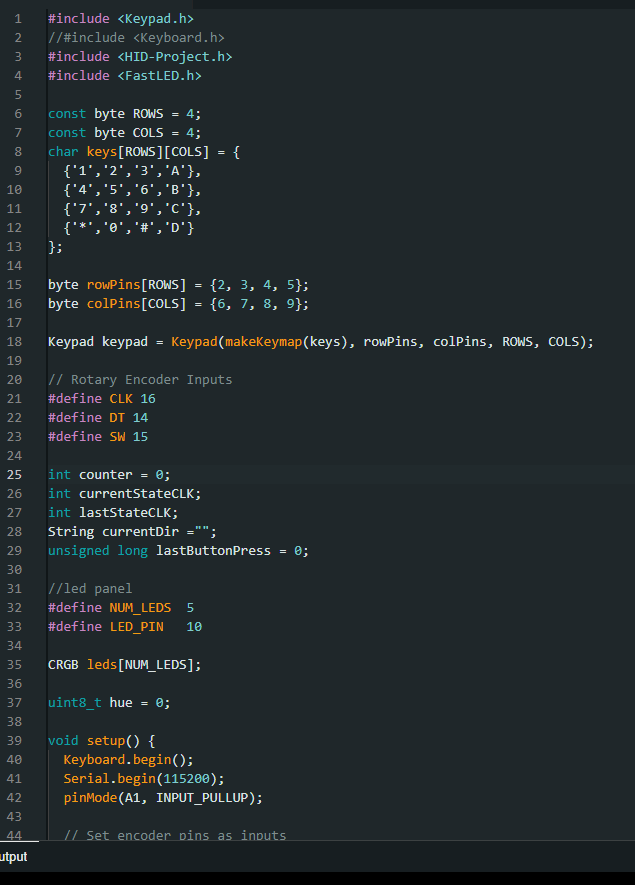
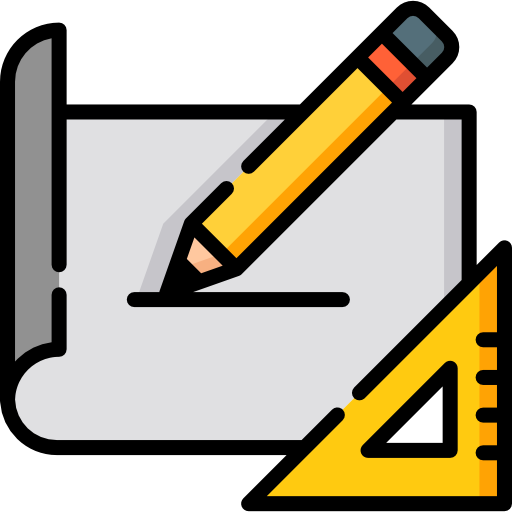
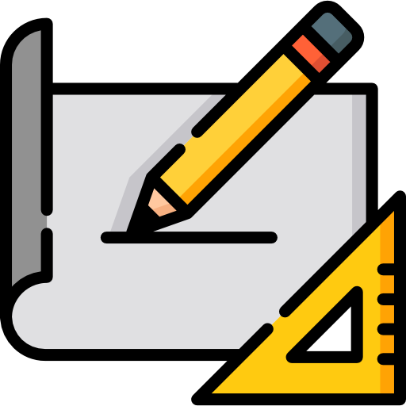

Final Project Concept
The concept for my final project will be a macro keyboard crossed with a controller
style input device which aims to provide the user with additional functionality and
control of their device while being able to look the part.
The design of the product was heavily inspired by stream decks available commercially
as I really like the compact yet theme accurate look and style. The use however, was
determined to be used as an extension to a regular keyboard, in order to make the
product more appealing and applicable to a wider audience

Final Project CAD
The entire process began with CAD in Fusion360. The rough idea was designed to incorporate
both laser cut and 3D printed elements. This proved to be quite a challenge as the design
would be limited by the capabilities of both types of fabrication methods and hence,
the design was altered for a much smoother production process.
The design first began with the model of the housing that will be used to house all the
electrical components inside the circuit. This part of the design will be making use of
laser cutting in order to create smooth corners fast and precisely.
The design was eventually decided to have walls made of 3mm sheets cut unto shape as this
was a quick method to rapidly create walls with rounded edges and holes for the insertion
of guiding screws and bolts.
Futhermore, the rather complicated faceplate for the device was lasercut, and hence the
continuity of the design will be preferred.
Next up the stand for the design would be 3D printed with the concept of a laptop cooler
as the inspiration. I opted for a slight tilt to mimic laptop coolers, allowing the face
of the device to face towards the user which would allow easier access/visibility for the
user compared to lying flat on the table surface.
Electronics
The first component introducedwould be the 4x4 membrane keypad. Originally i had opted
for a design with keyboard switches, but the connections and soldering proved to be
difficult due to how flimsy the connection were, so eventually, for simplicity the
4x4 membrane keypad was chosen.
The number pad allows for full Numpad inputs, and a few additional functionality for
device audio. These include: Fast forwarding, Rewinding, Skipping, Previous, and Pause/play.
The next component would be the rotary encoder component. The rotary encoder will be used
as a volume knob to control the volume of the device that the extension is plugged in to.
Clockwise rotation would raise the volume, counterclockwise would lower the volume and
pressing down on the rotary encoder would mute the device.
The last component used is the joystick component. The joystick is capable of mimicing
arrow keys and even allows for a combination of two directional inputs to allow for diagonal
directions, at the same time. The joystick also has been mapped to press the 'ENTER' key when
pressed down.

Arduino Code
Arduino IDE is used to write the code for the project. The microcontroller of choice is the
Arduino Pro Micro. This is because of its compatability with the Keyboard.h and similar
library and similar libraries.
To be able to identify which keys are being pressed, a keypad.h library is used to create a
matrix is which the keys are placed.
Next up, the library HID-Project.h is used in replacement of the Keyboard.h library due to
much more populated library, giving me access to more functions to be mapped to the keys.
Lastly, the RGB bar at the bottom of the project makes use of the FastLED.h library. This
library was chosen as after preliminary testing, i prefer it to the Adafruit library due to
the simplicity and its available patterns.
Laser Cutting
The Body of the project was first designed in Fusion360 before a 2D sketch of all the final
components were exported as a DXF. The DXF was then imported to coreldraw and sent to the UCP
for laser cutting. The material of choice was 3mm black cast acrylic due to its sleek look.
3D printing
To complement the setup, a 3D printed clip on style mount was designed in Fusion360 and exported
as an STL to Cura for slicing before 3D printing.
Assembly and Testing
When first assembled, the project showed a few issues, one being the misalignment of the joystick
module. This was due to me accidentally pulling on the joystick's wires during the installation
The next issue was that the LEDs showed that they were occasionally disconnecting. This is a result
of a bad solder joint from the wires to the Neopixel LEDs. This was resolved by desoldering and
resoldering a new connection to the Neopixels.
Functions and Specifications
With all the issues resolved, the final specifications and functions are as follows: Full Numberpad,
Joystick for arrow keys, knob for volume and 360 LED bar.
 ABOUT ME
ABOUT ME 2D DESIGN
2D DESIGN CAD-ing
CAD-ing 3D PRINTING
3D PRINTING LASER CUTTING
LASER CUTTING WEB DEV
WEB DEV FINAL PROJECT
FINAL PROJECT


.png)
 
